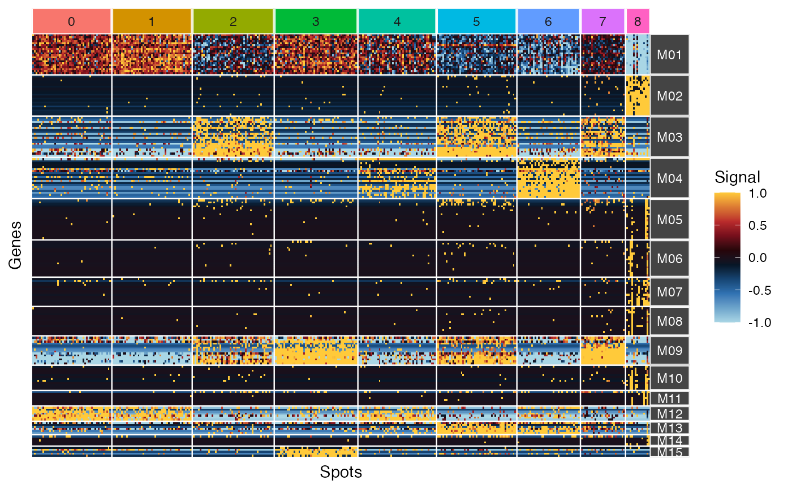

Plot the results (heatmap) contained in a ClusterSet object.
plot_ggheatmap(
object,
to_log2 = FALSE,
use_top_genes = TRUE,
ident = NULL,
panel_spacing = 0.05,
colors = colors_for_gradient("Ju1"),
standardizing = FALSE,
color_ident = NULL,
ceil = 1,
floor = -1,
centering = TRUE,
xlab = "Genes",
ylab = "Spots",
hide_gene_name = TRUE,
hide_col_name = TRUE,
pseudocount = 0.1
)A ClusterSet object.
Whether data should be transform in logarithm base 2 (+ 1 as a pseudocount).
A logical to indicate whether to use highly similar genes in the slot top_genes of ClusterSet.
A named vector containing the cell type identities for each cell. Typically the result from the Idents() function on a Seurat object (see Seurat library). Lists are also accepted which will results in multi-level facets.
Spacing between facets/panels ("line" units).
A vector of colors for the gradient.
Whether rows should be divided by standard deviation.
A vector containing colors for the cell classes as. also accepted which will results in multi-level facets.
A value for ceiling (NULL for no ceiling). Ceiling is performed after log transformation, centering and standardization.
A value for flooring (NULL for no flooring). Flooring is performed after log transformation, centering and standardization.
Whether rows should be centered.
A name for the x axis.
A name for the y axis.
Whether to hide gene names.
Whether to hide column names.
A ggplot diagram.
library(Seurat)
# Load datasets
load_example_dataset('7871581/files/pbmc3k_medium_clusters')
#> |-- INFO : Dataset 7871581/files/pbmc3k_medium_clusters was already loaded.
load_example_dataset('7871581/files/pbmc3k_medium')
#> |-- INFO : Dataset 7871581/files/pbmc3k_medium was already loaded.
# rename clusters
new_obj <- rename_clust(pbmc3k_medium_clusters, new_name=sprintf("M%02d", as.integer(clust_names(pbmc3k_medium_clusters))))
# Use plot_ggheatmap
ident_pbmc3k <- sort(Seurat::Idents(pbmc3k_medium))
new_obj <- top_genes(new_obj)
#> |-- INFO : Number of top genes is greater than the number of genes in cluster 6. All genes will be used.
#> |-- INFO : Number of top genes is greater than the number of genes in cluster 7. All genes will be used.
#> |-- INFO : Number of top genes is greater than the number of genes in cluster 8. All genes will be used.
#> |-- INFO : Number of top genes is greater than the number of genes in cluster 9. All genes will be used.
#> |-- INFO : Number of top genes is greater than the number of genes in cluster 10. All genes will be used.
#> |-- INFO : Number of top genes is greater than the number of genes in cluster 11. All genes will be used.
#> |-- INFO : Number of top genes is greater than the number of genes in cluster 12. All genes will be used.
#> |-- INFO : Number of top genes is greater than the number of genes in cluster 13. All genes will be used.
#> |-- INFO : Number of top genes is greater than the number of genes in cluster 14. All genes will be used.
#> |-- INFO : Number of top genes is greater than the number of genes in cluster 15. All genes will be used.
#> |-- INFO : Results are stored in top_genes slot of ClusterSet object.
plot_ggheatmap(new_obj[,names(ident_pbmc3k)], ident=ident_pbmc3k)
